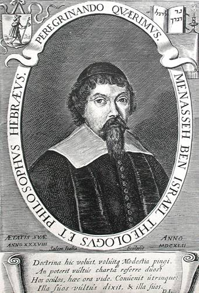
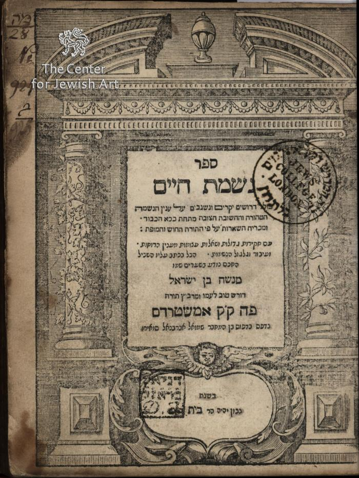

Rav Menashe ben Yisroel
1604-1657
Biography
Rav Menashe ben Yisroel was, for a time, the most famous Jew in the world.
He was born in Portugal at a time that the Jews in Portugal had been forced to convert to Catholicism in 1496. Many so-called new christians were severely persecuted. Among them is also the father of Menashe. Shortly after Menashe’s birth they fled Portugal. In 1614 they settled in Amsterdam in the district Vlooienburg.
Menashe studied under Chacham Isaac Uziel in the newly established sefardic yeshive in Amsterdam, Talmud Torah, and at the young age of 18, he was appointed to the Rabbinical Council of Amsterdam, consisting of four members. His fame as a talmid chochom and as an expert in science spread far beyond the Netherlands.
Rav Menashe work hard to provide new havens of refuge for his brethren. He sent a petition to the English Parliament to officially grant the re-admission of Jews after their expulsion in 1290.
In October 1655, rav Menashe landed in London and presented a memorandum to sir Oliver Cromwell in which he pointed out the many advantages that England could derive from granting the Jews permission to resettle in England. He succeeded eventually; (after his death, eight years after his efforts in London, the Jews were accepted in England and were even allowed to build a shul). Menashe ben Yisroel was greatly honored by the British Protector.
On his way back to Amsterdam, believing his mission to have been unsuccessful, he was nifter in Middelburg. He was buried in de beis hakvores of the sefardim in Ouderkerk.
Major Works
Like his distant relative, Rav Yitschak Abarbanel, he wrote a four volume work in which he refuted the attacks from within and without, on the Torah and cleared up all the misunderstandings caused by the so-called “Bible critics”.
In his Nishmas Chaim, he wrote for the defense of important principles of emuna like tchias hamesim, the neshome and Moshiach. He wrote many other works and one of them was illustrated by the famous Rembrandt van Rijn.
He became known for having established the first Hebrew printing press in the Netherlands. From it came the great printing and publishing tradition of Amsterdam, from which stemmed some of the best editions of Tanach, Talmud and many other works.

Visiting the Kever
Open every day from 08.30 - 19.00 (in the summer till 20.00). On Friday open till 17.00.
Address: Beth Chaim
Kerkstraat 10, Ouderderkerk aan de Amstel
For more info or for tour guides see info@bethchaim.nl